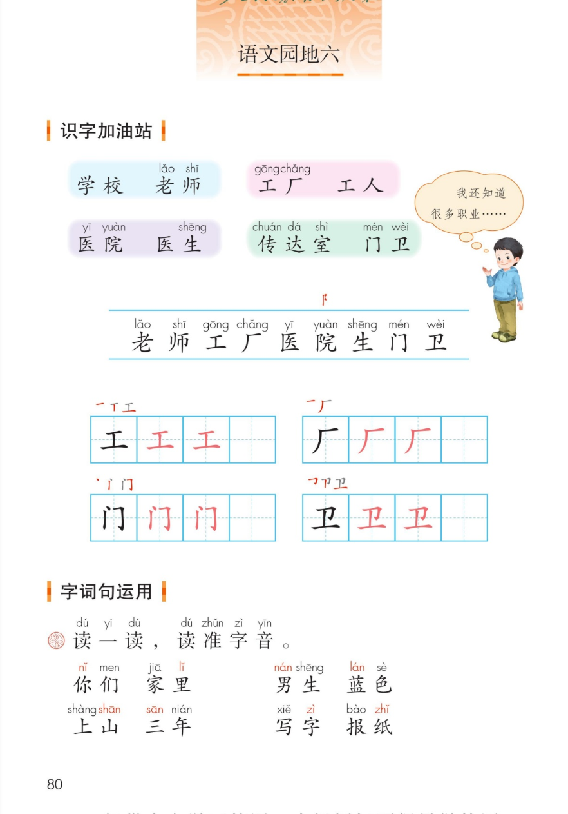
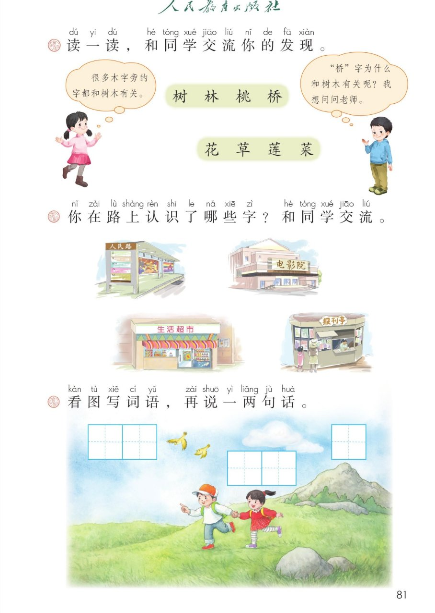
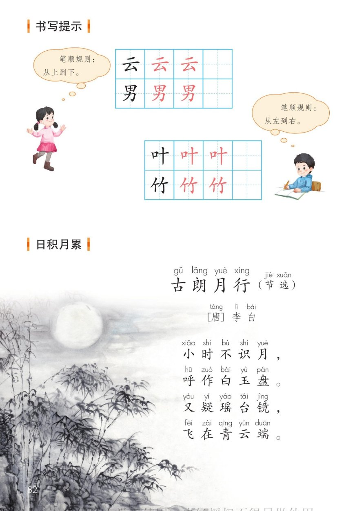
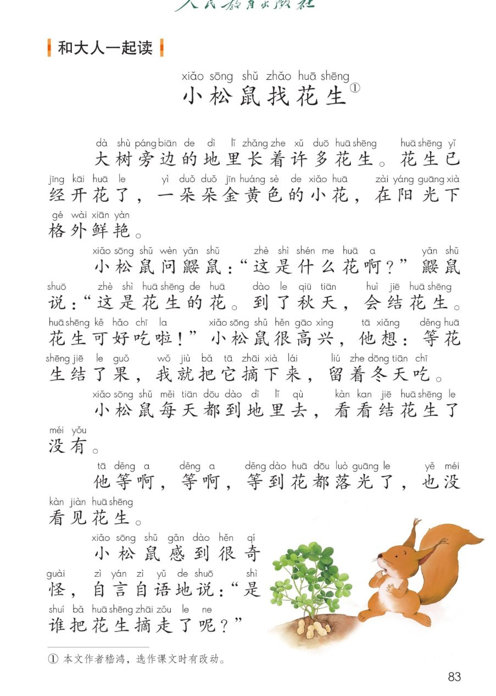

×
🔊 手机听不到声音怎么办？
① 先把手机
媒体音量调大 ，确认没开静音、没连蓝牙耳机；在微信里打开的，点右上角「⋯ → 用浏览器打开」。
② 还是没声音？到应用商店免费下载
Microsoft Edge 浏览器 （它自带朗读发声），用它打开本页面就能出声。
③ 换了 Edge 仍然没声音，说明这部手机的
硬件/系统不支持 网页朗读（多为老旧机型）；近几年买的新手机一般都能正常播放。
→ 打开声音自检
统编版 · 一年级上册 · 第六单元 · 语文园地六
语文园地六
职业词语、读准字音、偏旁里的秘密、笔顺规则、古朗月行、小松鼠找花生。
会认 9 字 会写 4 字 两条笔顺规则 日积月累 和大人一起读 闯关 8 题
这个园地学什么： 认识学校、工厂、医院、传达室 里的职业，会认 9 个字、写好「工、厂、门、卫」；
把 n 和 l、平舌和翘舌 读清楚；发现木字旁、草字头 的秘密；学两条笔顺规则 ；
背《古朗月行》，再和大人一起读《小松鼠找花生》。🐿️
课本第 80 页 点一组读一组
课本气泡： 「我还知道很多职业…… 」—— 说给大家听：
农民 种庄稼、警察 指挥交通、厨师 做菜、司机 开车、消防员 灭火、快递员 送包裹。👮♂️
识字条 · 连起来读
老 师 工 厂 医 院 生 门 卫 —— 能连成 老师、工厂、医院、医生、门卫
课本第 80 页田字格 点卡听笔顺
课本第 80 页 点一组对比读
课本原题： 读一读，读准字音。n / l 、平舌 / 翘舌 、轻声 。
照镜子小窍门： 读 n 舌尖顶上牙床、气从鼻子出；读 l 舌尖轻轻一弹。
zh ch sh 舌头翘起来，z c s 舌头放平。🪞
课本第 81 页 点一个字读一个字
课本气泡： 「很多木字旁的字都和树木有关。 」「桥」字为什么和树木有关呢？我想问问老师。 」🤔
我的发现： 木字旁 → 树木、木头做的东西（古时候的桥多用木头造 ，所以桥也是木字旁）；
草字头 → 花草植物。看偏旁猜意思 ，是识字的好办法！💡
课本第 81 页 和同学交流 · 点卡听读
课本原题： 你在路上认识了哪些字？和同学交流。小任务： 放学路上找 3 个 认识的字（路牌、招牌、站牌都行），明天说给同桌听。🚏
课本第 81 页 点卡听示例
课本原题： 看图写词语，再说一两句话。白云、小鸟、大山、草地、小朋友、石头 …… 答案不止一种 哦！
我会说一两句： 「天上飘着朵朵白云 ，两只小鸟 在飞。」
「两个小朋友 手拉手在草地上跑，远处有一座大山 。」🗣️
课本第 82 页 点卡听规则
记住两句话： 上下结构从上到下 （云、男）；左右结构从左到右 （叶、竹）。
写字前先想一想：这个字该按哪条规则写？✍️
课本第 82 页 点一句读一句
🎵 全诗连读
🐢 放慢背一背（每句读两遍）
诗意一点通： 小时候不认识月亮，把它叫白玉盘 ；又以为是仙人的瑶台镜 ，飞到青云上去了。🌕
李白把圆月想成盘子和镜子——你会把月亮比作什么？
课本第 83 页 点一段读一段
🎵 全文连读
🔁 跟读模式（读完一段停一停）
读后想一想： 「是谁把花生摘走了呢？ 」—— 谁也没摘！
花生的花在地上开，果实却长在泥土里 ，挖开土才找得到。🥜
小道理： 看事情不能只看表面。
点题目可以听题，点选项就判对错，答完自动算分
已经答 0 题，答对 0 题。
点图放大

第 80 页 · 识字加油站 · 字词句运用

第 81 页 · 偏旁发现 · 路上认字 · 看图写词语

第 82 页 · 书写提示 · 古朗月行

第 83 页 · 和大人一起读 · 小松鼠找花生